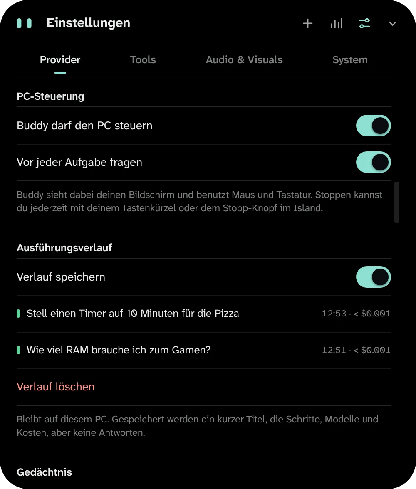
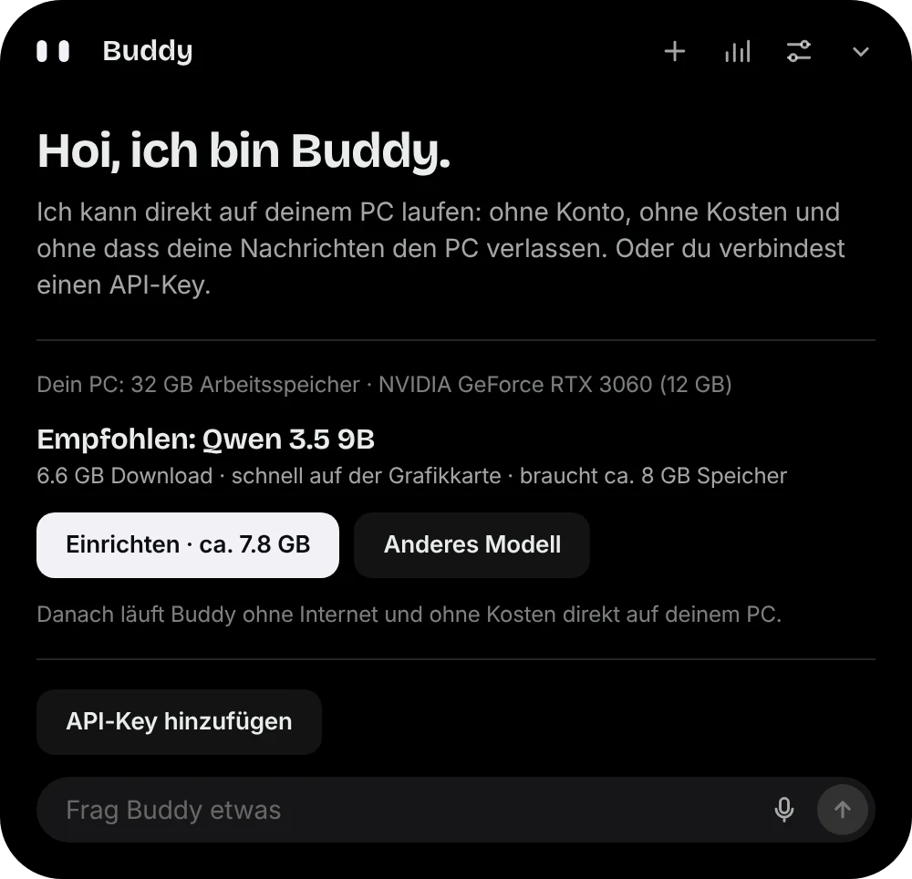

Fragen und schreiben
Lass dir etwas erklären, einen Text formulieren oder Code schreiben. Antworten erscheinen Wort für Wort, Code ist hervorgehoben und mit einem Klick kopiert. Gefällt eine Antwort nicht, lässt du sie neu schreiben.

Für Windows 10 und 11 · Open Source
Buddy Island ist eine kleine schwarze Insel oben in der Mitte von Windows. Ein Tastendruck, und du fragst, stellst einen Timer oder siehst deine Mitteilungen, ohne ein Fenster zu wechseln. Die KI läuft auf deinem PC oder bei dem Anbieter, den du wählst.

Lass dir etwas erklären, einen Text formulieren oder Code schreiben. Antworten erscheinen Wort für Wort, Code ist hervorgehoben und mit einem Klick kopiert. Gefällt eine Antwort nicht, lässt du sie neu schreiben.
«Stell einen Timer für die Pizza» genügt. Windows-Mitteilungen erscheinen kurz oben in der Insel, Termine aus deinem Kalender meldet Buddy rechtzeitig, und die laufende Musik steuerst du direkt dort.

Mit Claude kann Buddy Maus und Tastatur übernehmen, etwa «Öffne den Editor und schreib eine Einkaufsliste». Vor jeder Aufgabe fragt er um Erlaubnis, und mit demselben Tastenkürzel stoppst du ihn jederzeit.
Solange Buddy deinen Bildschirm aufnimmt und auswertet, leuchtet eine feine Linie am Bildschirmrand. Sie erscheint nur dann und verschwindet, sobald er fertig ist.

Du wählst. Buddy bleibt dabei derselbe: gleiche Art zu antworten, gleiche Grundregeln, bei jedem Anbieter und jedem Modell.
| Option | Wo es rechnet | Du brauchst | Kosten |
|---|---|---|---|
| Lokal mit Ollama | auf deinem PC | etwa 2 bis 20 GB Platz, je nach Modell | keine |
| Lokal mit Colibrì | auf deinem PC, Teile von der SSD | mindestens 16 GB Arbeitsspeicher, 25 GB Platz, Python | keine |
| Claude (Anthropic) | beim Anbieter | einen API-Key | nach Verbrauch |
| OpenAI | beim Anbieter | einen API-Key | nach Verbrauch |
| Grok (xAI) | beim Anbieter | einen API-Key | nach Verbrauch |
| Gemini (Google) | beim Anbieter | einen API-Key | nach Verbrauch |
Die PC-Steuerung mit Maus und Tastatur gibt es nur mit Claude. Lokale Modelle können Buddys einfache Werkzeuge nutzen (Timer, Apps, Musik), wenn das Modell es unterstützt.
Modelle, die nicht in deinen Speicher passen, kann Buddy mit Colibrì laufen lassen. Das ist langsamer, weil Teile von der SSD kommen. Buddy schlägt es nur vor, wenn Ollama nicht reicht.

Die Installationsdatei für Windows kommt direkt aus dem GitHub-Release.
Datei öffnen. Weil Buddy nicht mit einem bezahlten Zertifikat signiert ist, warnt Windows: «Weitere Informationen» und dann «Trotzdem ausführen».
Klick oben auf die Insel. Entweder «Einrichten» für die lokale KI, oder einen API-Key für Claude, OpenAI, Grok oder Gemini einfügen.
Mit Strg + Umschalt + Leertaste oder einem Klick auf die Insel. Updates installiert Buddy selbst, nach Prüfung ihrer Signatur.
Überschriften in Buddy sehen jetzt aus wie auf der Website, der Text bleibt in der vertrauten Windows-Schrift.
Buddys Augen sind wieder weiss. «Lagune» und die anderen Farben findest du weiterhin unter Einstellungen › Akzentfarbe.
Buddy selbst nichts. Mit der lokalen KI entstehen keine Kosten. Mit Claude, OpenAI, Grok oder Gemini bezahlst du beim Anbieter nach Verbrauch; in den Einstellungen setzt du ein Monatslimit.
Nur für Claude, OpenAI, Grok oder Gemini. Den Key erstellst du im Konto des Anbieters. Ein Abo wie ChatGPT Plus oder Claude Pro enthält keinen API-Zugang. Die lokale KI braucht keinen Key.
Das hängt vom PC ab. Mit einer Grafikkarte, in die das Modell passt, antwortet sie flüssig; nur mit dem Prozessor deutlich langsamer. Buddy zeigt vor dem Download eine grobe Einschätzung und kann das Tempo auf deinem PC messen.
Ein eigenständiges Open-Source-Programm, das sehr grosse Modelle laufen lässt, indem es Teile von der SSD liest. Buddy nutzt es nur für Modelle, die mit Ollama nicht in den Speicher passen, und sagt dir das. Es ist dann langsamer.
Nein. Nur während einer Aufgabe, für die du ihm die PC-Steuerung erlaubt hast. Solange er hinschaut, leuchtet der Bildschirmrand; ohne diesen Rand nimmt er nichts auf. Läuft ein Spiel, pausiert er.
Ja. Unter Einstellungen → Erscheinungsbild wählst du Dunkel, Hell oder wie Windows. Geschlossen bleibt die Insel immer schwarz, die Augen haben deine Akzentfarbe.
Läuft ein Spiel im Vordergrund, blendet Buddy sich aus: keine Einblendungen, kein Ton, keine Steuerung. Verpasste Mitteilungen siehst du danach.
Windows 10 ab Version 1809 und Windows 11, jeweils 64 Bit. Die lokale KI mit Ollama braucht Windows 10 22H2 oder neuer.
Windows-Einstellungen → Apps → Installierte Apps → Buddy Island → Deinstallieren. Für alles den Ordner %APPDATA%\Buddy Island löschen. Ollama und Colibrì sind eigene Programme und bleiben, bis du sie entfernst.